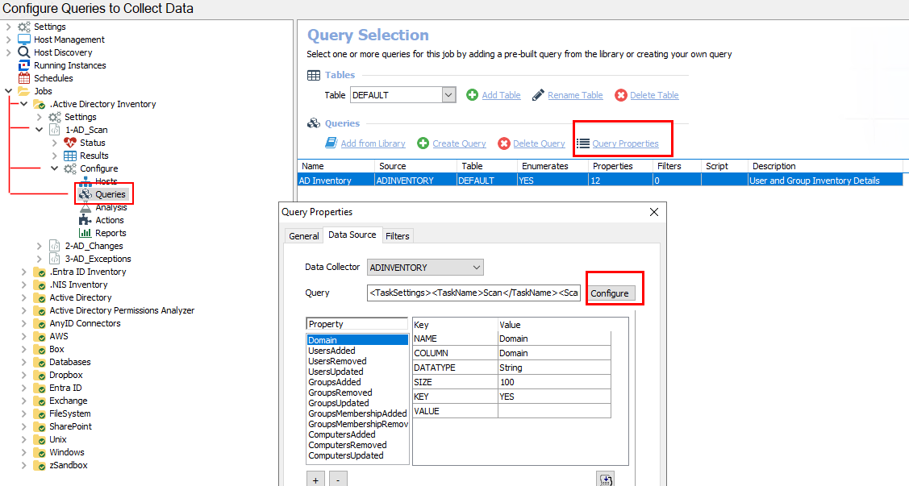
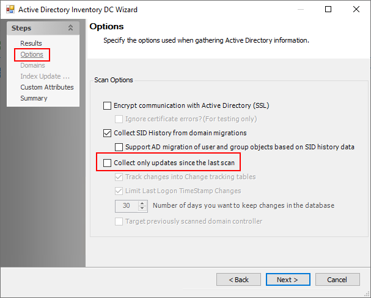

Symptom
A deleted user account(s) from AD still shows in Netwrix Enterprise Auditor (NEA) Reports and is not flagged as deleted.
Cause
A failure on the ADI scan that could be caused by a myriad of reasons.
Resolution
Run a full AD Inventory Scan by disabling differential scanning for the 1-AD_Scan job using the steps below:
-
Navigate to NEA > Jobs > .Active Directory Inventory > 1-AD_Scan > Configure > Queries > Query Properties > Configure > Options.
 -
Uncheck the box for Collect only updates since the last scan.
 -
Click Next through the end of the Active Directory Inventory DC Wizard.
-
Re-run the 1-AD_Scan job.
-
Select the previously-unchecked box for Collect only updates since the last scan.
-
Re-run the 1-AD_Scan job.
-
To determine whether the job was successful, verify the results in the SA_ADInventory_UsersView. Search for the deleted user to confirm whether it exists or is marked IsDeleted.
-
If the deleted user does not exist or is not marked IsDeleted, then verify the permissions on the scan account. The permissions must have List contents & read Property on the Deleted Objects container.
-
For more information, please see the following article: ADInventory Data Collector.